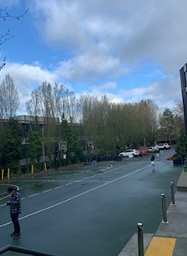

For my color pallete, I am using a monochromatic theme, with mostly blues. Blue is my favorite color and I really love how the different shades blend together to create a really pretty color pallete.
I am not trying to elicit melancholiness, though blue is commonly accociated with that emotion. Instead, I want to elicit a sense of calm and hope within my audience, especially since I have colors that don't clash and are relatively easy on the eye.
This is the photo which I extracted the colors from:
